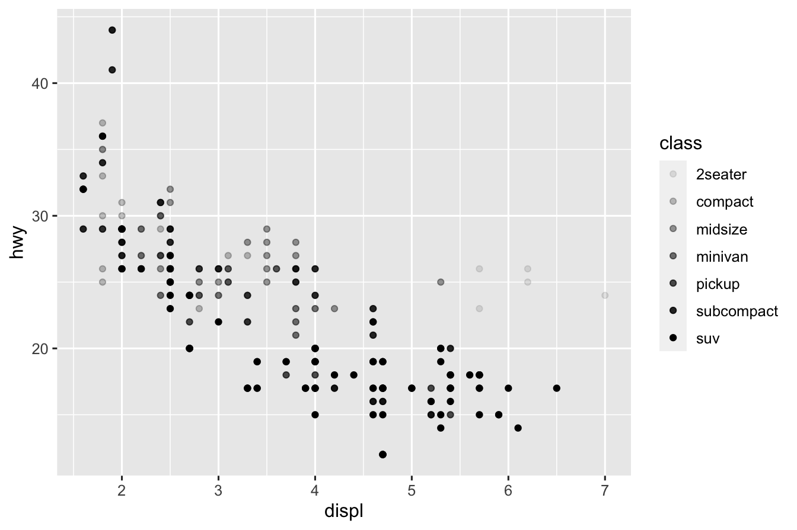

1.4 Playing with Datasets in R
R has a lot inbuilt Datasets that one can use. The command
will list currently installed data sets.
Many datasets in R are often stored as data frame (data.frame). A data frame is a rectangular collection of variables (in the columns) and observations (in the rows). Let us learn about real data stored as data frame
Let us learn about airquality dataset a bit more. We can print entire data set on the screen by calling it
but it prints entire dataset which may be large most of the times! Let us try the head() function
## Ozone Solar.R Wind Temp Month Day
## 1 41 190 7.4 67 5 1
## 2 36 118 8.0 72 5 2
## 3 12 149 12.6 74 5 3
## 4 18 313 11.5 62 5 4
## 5 NA NA 14.3 56 5 5
## 6 28 NA 14.9 66 5 6This provides the first six rows. Now try the tail() function
## Ozone Solar.R Wind Temp Month Day
## 148 14 20 16.6 63 9 25
## 149 30 193 6.9 70 9 26
## 150 NA 145 13.2 77 9 27
## 151 14 191 14.3 75 9 28
## 152 18 131 8.0 76 9 29
## 153 20 223 11.5 68 9 30This provides the last six rows. But sometimes we may want to print more or less rows. head() and tail() both functions has a parameter n with which we can print our desired number of rows.
## Ozone Solar.R Wind Temp Month Day
## 1 41 190 7.4 67 5 1
## 2 36 118 8.0 72 5 2
## 3 12 149 12.6 74 5 3
## 4 18 313 11.5 62 5 4
## 5 NA NA 14.3 56 5 5
## 6 28 NA 14.9 66 5 6
## 7 23 299 8.6 65 5 7
## 8 19 99 13.8 59 5 8
## 9 8 19 20.1 61 5 9
## 10 NA 194 8.6 69 5 10A specific datapoint of a data frame can be called using row and column number
## [1] 63The same can be printed by using the variable name for the given column and call it by it’s position.
## [1] 63An entire row can be printed like this.
## Ozone Solar.R Wind Temp Month Day
## 148 14 20 16.6 63 9 25We can pass vector of Provides Ozone and Temp columns
## Ozone Temp
## 1 41 67
## 2 36 72
## 3 12 74
## 4 18 62
## 5 NA 56
## 6 28 66
## 7 23 65
## 8 19 59
## 9 8 61
## 10 NA 69
## 11 7 74
## 12 16 69
## 13 11 66
## 14 14 68
## 15 18 58
## 16 14 64
## 17 34 66
## 18 6 57
## 19 30 68
## 20 11 62
## 21 1 59
## 22 11 73
## 23 4 61
## 24 32 61
## 25 NA 57
## 26 NA 58
## 27 NA 57
## 28 23 67
## 29 45 81
## 30 115 79
## 31 37 76
## 32 NA 78
## 33 NA 74
## 34 NA 67
## 35 NA 84
## 36 NA 85
## 37 NA 79
## 38 29 82
## 39 NA 87
## 40 71 90
## 41 39 87
## 42 NA 93
## 43 NA 92
## 44 23 82
## 45 NA 80
## 46 NA 79
## 47 21 77
## 48 37 72
## 49 20 65
## 50 12 73
## 51 13 76
## 52 NA 77
## 53 NA 76
## 54 NA 76
## 55 NA 76
## 56 NA 75
## 57 NA 78
## 58 NA 73
## 59 NA 80
## 60 NA 77
## 61 NA 83
## 62 135 84
## 63 49 85
## 64 32 81
## 65 NA 84
## 66 64 83
## 67 40 83
## 68 77 88
## 69 97 92
## 70 97 92
## 71 85 89
## 72 NA 82
## 73 10 73
## 74 27 81
## 75 NA 91
## 76 7 80
## 77 48 81
## 78 35 82
## 79 61 84
## 80 79 87
## 81 63 85
## 82 16 74
## 83 NA 81
## 84 NA 82
## 85 80 86
## 86 108 85
## 87 20 82
## 88 52 86
## 89 82 88
## 90 50 86
## 91 64 83
## 92 59 81
## 93 39 81
## 94 9 81
## 95 16 82
## 96 78 86
## 97 35 85
## 98 66 87
## 99 122 89
## 100 89 90
## 101 110 90
## 102 NA 92
## 103 NA 86
## 104 44 86
## 105 28 82
## 106 65 80
## 107 NA 79
## 108 22 77
## 109 59 79
## 110 23 76
## 111 31 78
## 112 44 78
## 113 21 77
## 114 9 72
## 115 NA 75
## 116 45 79
## 117 168 81
## 118 73 86
## 119 NA 88
## 120 76 97
## 121 118 94
## 122 84 96
## 123 85 94
## 124 96 91
## 125 78 92
## 126 73 93
## 127 91 93
## 128 47 87
## 129 32 84
## 130 20 80
## 131 23 78
## 132 21 75
## 133 24 73
## 134 44 81
## 135 21 76
## 136 28 77
## 137 9 71
## 138 13 71
## 139 46 78
## 140 18 67
## 141 13 76
## 142 24 68
## 143 16 82
## 144 13 64
## 145 23 71
## 146 36 81
## 147 7 69
## 148 14 63
## 149 30 70
## 150 NA 77
## 151 14 75
## 152 18 76
## 153 20 68Note: using c() function we can form any vector and that will enable display of the respective columns. We did not specify the row, so all rows will be displayed.
Five Number summary
## Min. 1st Qu. Median Mean 3rd Qu. Max.
## 56.00 72.00 79.00 77.88 85.00 97.00Histogram

We can use the plot() function to just plot

We can use the plot() function to get a Scatter plot

Plotting the whole dataset